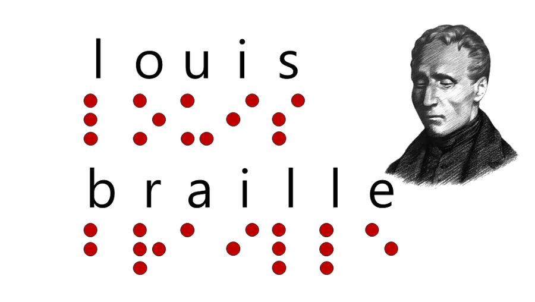
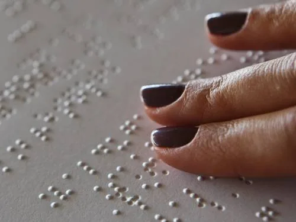
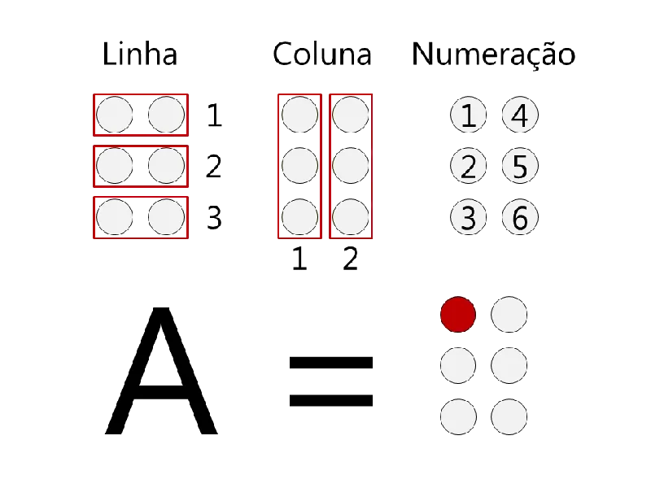

Contextualização sobre o sistema Braille
História
O Sistema Braille foi criado por Louis Braille, deficiente visual que com dezoito anos tornou-se professor do Instituto de Cegos de Paris. Ao ouvir falar de um sistema de pontos inventado por um oficial para ler mensagens durante a noite em lugares onde seria perigoso acender a luz, fez algumas adaptações no sistema de pontos em alto relevo e, em 1829, criou a simbologia Braille.

Como funciona?
Braille é uma linguagem de leitura e escrita tátil usada por deficientes visuais. Esta linguagem é composta por 63 sinais formados por pontos que seguem um padrão. Os pontos representam os caracteres, que são marcados em alto relevo para que o deficiente visual consiga identificá-los através do tato.
Através de um padrão de duas colunas compostas por três pontos cada, diferentes combinações em alto relevo são formadas, criando assim os caracteres Braille.

Exemplo
Para compreender melhor, analise o exemplo da letra A na simbologia Braille: ela é composta por um alto relevo na coluna 1 e linha 1, sendo que os demais pontos ficam vazios. Ou seja, a letra A é constituída por apenas um ponto em alto relevo. Simples, não?

Veja na prática
Procure alguma simbologia em Braille no seu teclado adaptado e pressione para descobrir a qual letra ela corresponde. No celular, use o teclado de 6 pontos abaixo.
Teclado Braille de 6 pontos
O alfabeto em Braille
Os pontos em vermelho estão em relevo. Cada cela tem dois pontos de largura e três de altura, numerados de 1 a 6.